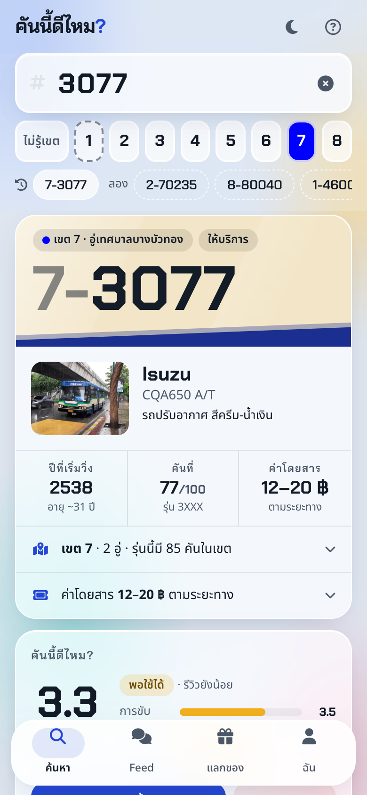
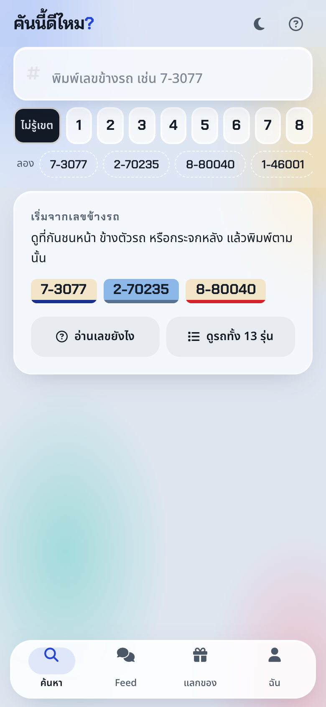

รุ่น เขต อู่ ค่าโดยสาร

3 ด้าน · สติกเกอร์ · report

ล่าสุด · มีประโยชน์ · แจ้งเหตุ

สติกเกอร์ · รูปโปรไฟล์

4 เหตุผล

แต้ม · ประวัติ
สรุป — ผู้โดยสารรู้จากแอปอื่นว่ารถอยู่ไหน แต่ไม่รู้ว่าคันนี้ควรขึ้นไหม เราทำเว็บที่กรอกเลขข้างรถ (เช่น 7-3077) แล้วเห็นรุ่น เขต อู่ ค่าโดยสาร และคะแนนจากผู้โดยสาร 3 ด้าน (การขับ · การจอดป้าย · สภาพรถ) ผู้ใช้ได้แต้มจากรีวิวที่มีประโยชน์ และนำแต้มไปแลกสติกเกอร์/รูปโปรไฟล์ได้ รีวิวที่ผิดกติกาถูก report และผู้ดูแลซ่อนพร้อมหักแต้มได้ เข้าสู่ระบบด้วยบัญชี Google จริง ระบบรันจริงบน ruk-com (Nginx · Node.js 22 · PostgreSQL 16) มี test อัตโนมัติ 13 ชุด และ backup รายวันที่ทดสอบกู้คืนแล้ว


ข้อมูลรุ่นรถ 13 รุ่น 8 เขต จากวิกิพีเดีย "องค์การขนส่งมวลชนกรุงเทพ" (CC BY-SA) · รีวิวในภาพเป็นข้อมูลทดสอบของทีม · ติดตั้งเป็นแอปบนมือถือได้ (PWA)
| เหตุการณ์ | แต้ม |
|---|---|
| เข้าด้วย Google ครั้งแรก | +20 |
| เขียนรีวิว + ดาว 3 ด้าน | +10 |
| ใส่ป้ายและเวลาที่ขึ้น | +5 |
| มีคนกด "มีประโยชน์" (เพดาน 30/วัน) | +2 |
| แจ้งเหตุ มีคนยืนยันครบ 3 | +20 |
| แลกสติกเกอร์ / รูปโปรไฟล์ | −20…−100 |
| รีวิวถูก report และผู้ดูแลยืนยันว่าผิด | −20 |
points_ledger · ยอด = SUM(delta) · ตรวจย้อนหลังได้FOR UPDATE) — กดพร้อมกันได้ของชิ้นเดียว แต้มไม่ติดลบ/api · rate limit 10 req/s (เข้าสู่ระบบ 10/นาที) · CSPbusapi ผ่าน systemd · ฟัง 127.0.0.1./deploy/deploy.sh (rsync + npm ci + migrate + restart)@example.com เปิดคู่ไว้สำหรับเดโม| Endpoint | ทำอะไร | |
|---|---|---|
| GET | /api/health · /api/config | สถานะ API+DB · เปิด Google จริงหรือยัง |
| POST | /api/auth/google | เข้าสู่ระบบ → JWT 15 นาที + refresh cookie |
| POST | /api/auth/refresh · logout | หมุน / เพิกถอน refresh token |
| GET | /api/me | โปรไฟล์ · แต้ม · ประวัติ · ของที่มี |
| DEL | /api/me | ลบบัญชีและข้อมูลทั้งหมด |
| POST | /api/me/avatar | ใช้รูปโปรไฟล์ที่แลกมา |
| GET | /api/buses/{fleetNo}[/reviews] | คะแนนเฉลี่ย 3 ด้าน · รีวิวของคันนั้น |
| POST | /api/reviews | รีวิว / แจ้งเหตุ + แต้ม |
| POST | /api/reviews/{id}/helpful · react · report | มีประโยชน์ · สติกเกอร์ · รายงาน |
| GET | /api/feed | sort=new|top · type=incident · zone |
| GET | /api/rewards | ของในร้าน |
| POST | /api/rewards/{id}/redeem | แลกของ |
| GET | /api/mod/reports | คิวผู้ดูแล (role จาก DB) |
| POST | /api/mod/reviews/{id}/resolve | hide (−20) / keep |
| ตาราง | เก็บอะไร |
|---|---|
| users | email, google_sub, ชื่อ, avatar, role |
| buses | fleet_no "7-3077", zone, model_id |
| reviews | type, ดาว 3 ด้าน, ข้อความ ≤500, ป้าย, เวลา, status |
| review_votes | PK (review, user) |
| points_ledger | delta, reason, ref_id, note |
| rewards | sticker / avatar, ราคา |
| user_rewards | PK (user, reward) |
| review_reactions | PK (review, user) → sticker |
| reports | เหตุผล, open/upheld/dismissed, ผู้ตัดสิน |
| refresh_tokens | sha256, family, หมดอายุ, เพิกถอน |
| มาตรการ | หลักฐาน / วิธีตรวจ |
|---|---|
| API / DB ไม่เปิดออกนอกเครื่อง | ss -ltn → 0.0.0.0:80 · 127.0.0.1:3000 · 127.0.0.1:5432 · nmap จากภายนอก: 3000, 5432 = filtered |
| บังคับ HTTPS | http (80, 8080) → 301 https · HSTS จาก LB (Nginx เอาของตัวเองออกแล้ว ไม่ให้ header ซ้ำ) |
| Authentication | ไม่มีรหัสผ่านในระบบ · access JWT 15 นาที · refresh token ใน cookie HttpOnly; Secure; SameSite=Strict เก็บใน DB เป็น sha256 · หมุนทุกครั้ง · ใช้ซ้ำ = เพิกถอนทั้งชุด · Google จริงตรวจ aud, iss, email_verified, exp |
| Authorization | JWT middleware · moderator อ่าน role จาก DB ทุก request |
| Input | parameterized SQL ทุกจุด · validate ทุก field · body ≤ 10 KB · word filter + กันเบอร์โทร |
| XSS / clickjacking | escape ทุกข้อความก่อนแสดง · CSP · X-Frame-Options SAMEORIGIN · nosniff · Permissions-Policy |
| Rate limit | Nginx: /api 10 req/s burst 20 · เข้าสู่ระบบ 10 req/นาที → 429 |
| Least privilege | API รันเป็น busapi + systemd ProtectSystem=strict · secret ใน /etc/bus-api.env (640) · DB peer auth |
| Patch | Node 18 (หมดซัพพอร์ต) → 22 LTS จาก nodejs.org ตรวจ SHA256 |
| Backup | pg_dump ทุกวัน 03:00 เก็บ 7 วัน · ทดสอบ restore แล้วจำนวนแถวตรงกับของจริง · pull-backup.sh ดึงออกนอกเครื่อง |
| ข้อมูลส่วนบุคคล | เก็บแค่อีเมล + ชื่อต้นจาก Google · ไม่เก็บตำแหน่ง · ไม่มีรูป · ลบบัญชีเองได้ · มีหน้า /privacy.html |
$ nmap -Pn -p 22,80,443,3000,3022,5432,8080 env-0241390… 22/tcp filtered ssh 80/tcp open http (→ 301 https) 443/tcp open https 3000/tcp filtered (API) 3022/tcp open (SSH gate ของ ruk-com) 5432/tcp filtered postgresql (DB) 8080/tcp open http-proxy (→ 301 https)
$ bus-restore-test.sh backup : bus-2026-10-08-1116.dump restore: 6 users, 7 reviews, 33 ledger rows live : 6 users, 7 reviews, 33 ledger rows $ curl -X POST …/api/auth/refresh (หลัง logout) 401
สแกนเฉพาะพอร์ตที่เกี่ยวกับระบบ เพราะ IP นี้เป็น load balancer ที่ใช้ร่วมกับลูกค้าอื่น · 3022 และ 8080 เข้าใจว่าเป็นของ LB/ruk-com ไม่ใช่เครื่องเรา
cd api && npm testสร้างฐานข้อมูลทิ้งได้ bus_test → เปิด API จริง → ยิง HTTP 13 ชุด (ผ่านทั้งหมด): เข้าสู่ระบบ, รีวิว, word filter, มีประโยชน์, แลกของ, แลกพร้อมกัน, รูปโปรไฟล์, สติกเกอร์, report, moderator, refresh token, ลบบัญชี — ทุกกรณีที่ต้องถูกปฏิเสธ (400/401/403/409) มี test
curl ตรวจ header, 301, endpoint ใหม่, refresh/logout ผ่าน LB จริง · ทดสอบ restore backup · nmap · ภาพหน้าจอทุกหน้าในรายงานนี้ถ่ายจากเว็บจริงหลัง deploy
บั๊กที่เจอและแก้: "เหี้ยมาก" หลุด filter (เจอจาก test) · logout แล้วยัง refresh ได้ภายใน 20 วินาที (เจอบน server) — เพิ่ม test ทั้งคู่
| Sprint | เป้าหมาย | ผล |
|---|---|---|
| 0 · ก.ย. | ปัญหา / ลูกค้า / โซลูชัน · ออกแบบ architecture · ต้นแบบค้นหา | One-pager + pitch · หน้าค้นหาใช้ได้บน GitHub Pages |
| 1 · ต.ค. | API + DB + Nginx/HTTPS + หน้ารีวิว + deploy | ครบ 5/5 + ดึงงาน Sprint 2 มาได้ 3 (ledger, feed, มีประโยชน์) · เปลี่ยนเป็น Google Sign-In (mock) |
| 2 · ต.ค. | แลกของ · report/moderator · refresh token · PWA · security + backup · แยก node | เสร็จ 12 (รวม Google Sign-In จริง) · รอ node ที่ 2 · ทดลองกับผู้ใช้ ↓ |
คนที่ลอง คน · สาย · รีวิว · แจ้งเหตุ · ใส่ป้าย+เวลา % · แลกของ คน · ติดตั้ง PWA คน
สิ่งที่ได้ยิน / ที่ปรับ:
ทีมกรอกจากข้อมูลจริง — ดึงตัวเลขได้จาก SELECT reason, count(*) FROM points_ledger GROUP BY 1
MOCK_LOGIN=0)MOCK_LOGIN=0)API_HOST=… API_ADDR=… WEB_ADDR=… ./deploy/deploy.sh → nmap ซ้ำ